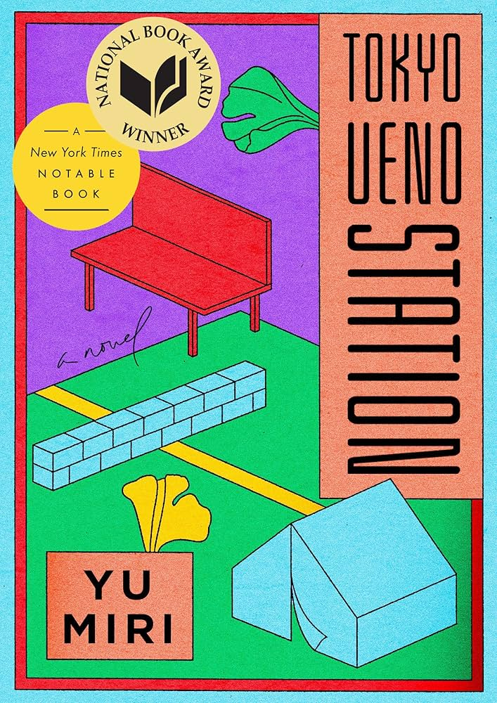

Paper Crane Pages

Essays

Invisible Lives: Kazu’s Story and the Forgotten History of Modern Japan in Tokyo Ueno Station
Mr. ChatGPT
In Tokyo Ueno Station, Yu Miri presents a haunting and emotionally resonant narrative through the voice of Kazu, a man who lives and dies on the margins of Japanese society. Through Kazu’s life and ghostly reflections, the novel unearths the harsh realities of those left behind by Japan’s rapid modernization and national mythmaking. His story is a powerful lens through which the novel explores themes of invisibility, grief, and the human cost of progress.
Kazu was born in the same year as Emperor Akihito, a symbolic parallel that immediately ties his life to Japan’s imperial history. Yet while the emperor’s life is marked by privilege and public celebration, Kazu’s is filled with poverty, labor, and silence. This contrast between the figurehead of the nation and a man representative of its underclass sets the tone for the novel’s quiet critique of inequality. Kazu’s life, though ordinary and largely unnoticed, becomes deeply symbolic of the forgotten individuals who built Japan’s postwar economic success but never reaped its rewards.
Much of Kazu’s life is spent doing temporary and physically demanding labor. He leaves his hometown in Fukushima to find work in Tokyo, including helping build venues for the 1964 Tokyo Olympics—an event that came to symbolize Japan’s rebirth and modernization following the devastation of World War II. Yet Kazu’s work is never celebrated. His contributions are erased from the national narrative, and like many day laborers, he is eventually discarded when he is no longer useful. His life becomes increasingly defined by loss: the early death of his son, the disintegration of his family, and his eventual descent into homelessness.
The park near Ueno Station, where Kazu dies and where his ghost continues to wander, is itself a poignant setting. Once a place of personal significance, it becomes a resting place for Tokyo’s homeless and a stage for national ceremonies, including imperial commemorations. From his spectral position in the park, Kazu reflects on the past and bears silent witness to the lives of others. His observations highlight the indifference of society toward people like him—those whose suffering is hidden behind the shiny surface of urban life and national pride.
Yu Miri, a writer of Korean-Japanese heritage, brings a unique perspective to this story, often writing from the margins of Japanese identity. Her portrayal of Kazu is deeply empathetic, grounded in emotional realism and quiet fury. She refuses to romanticize his suffering, instead presenting his life with nuance and dignity. Through spare, lyrical prose, she reveals the deep emotional and psychological impact of being unseen—not just by society, but by history itself.
Tokyo Ueno Station is more than a story about one man’s life and death; it’s a meditation on memory, loss, and the systems that quietly erase those deemed unimportant. Kazu may be invisible in life and even in death, but through Yu Miri’s novel, he becomes a powerful symbol of resilience, sorrow, and the enduring human need to be acknowledged.